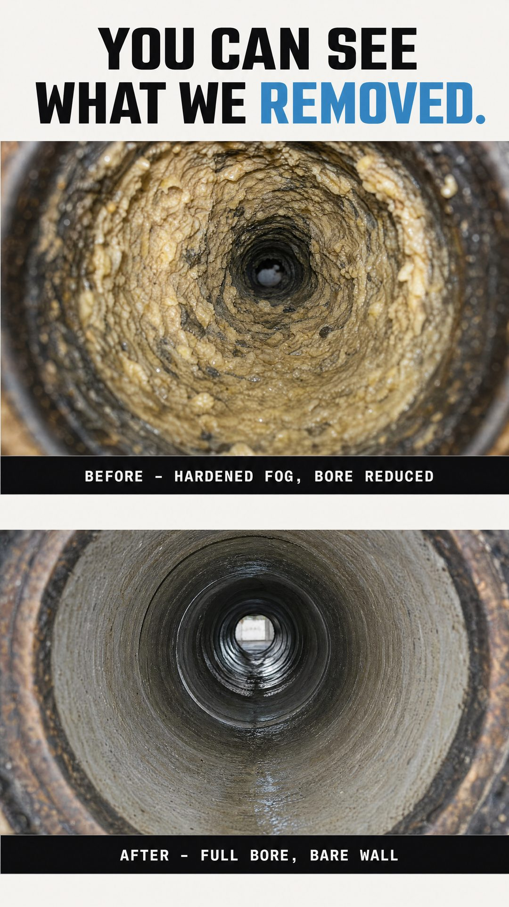
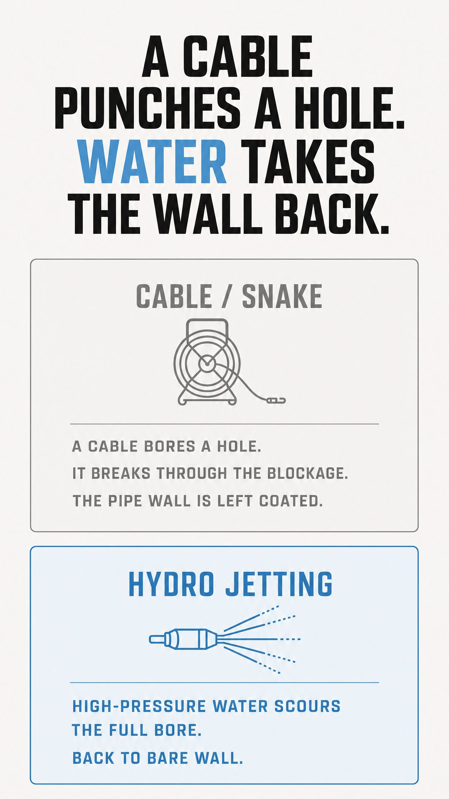
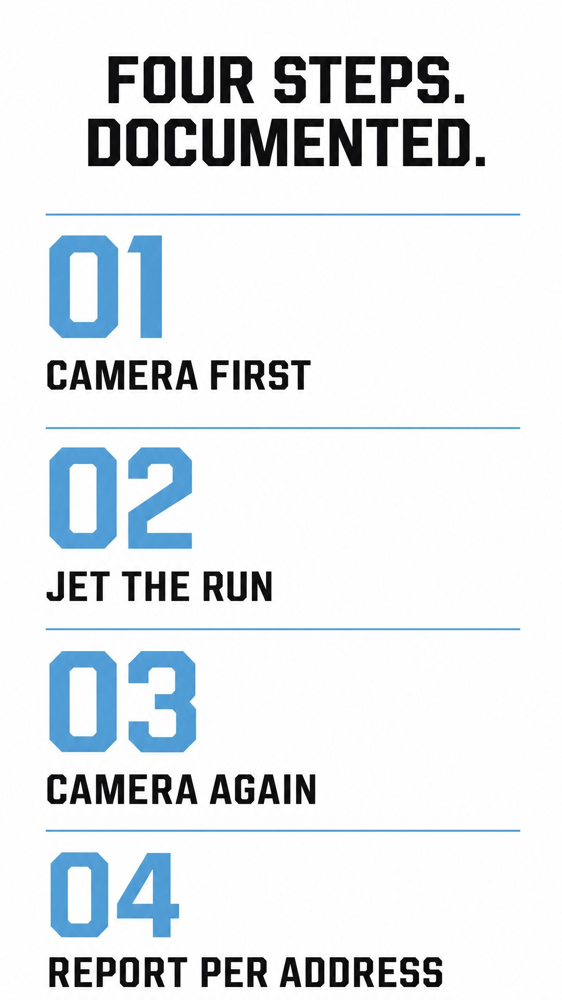
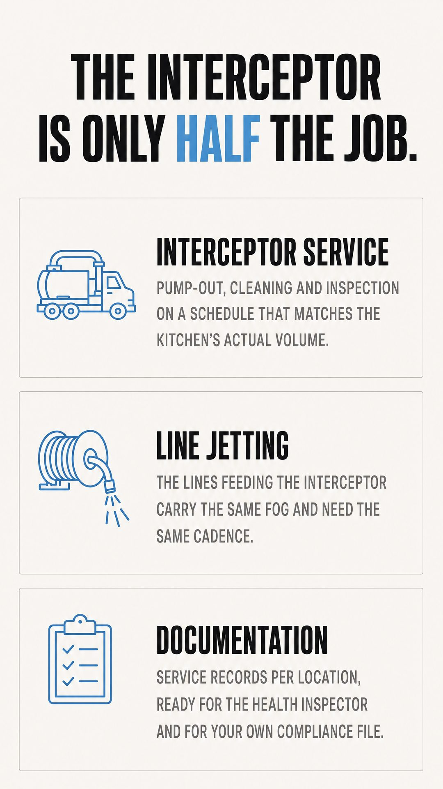
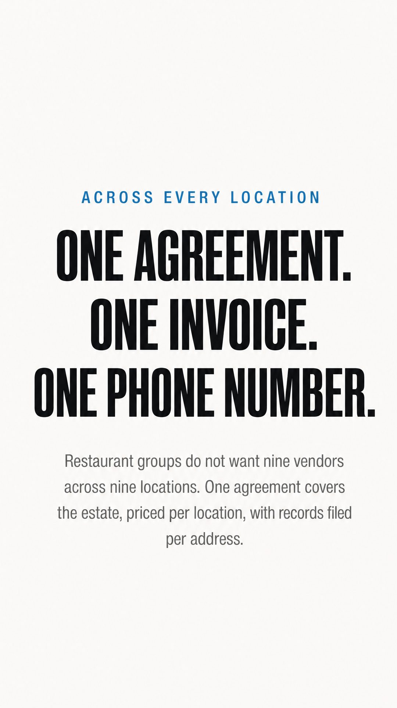
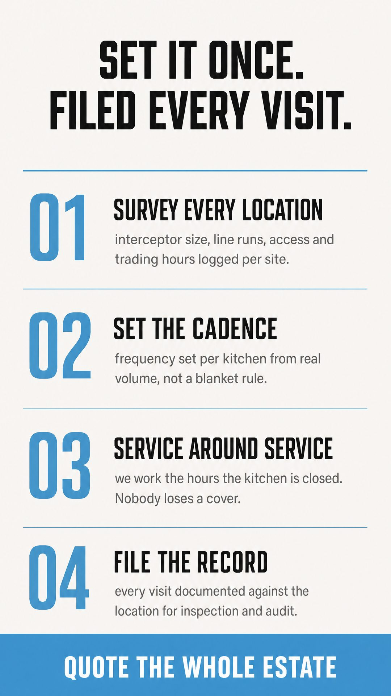
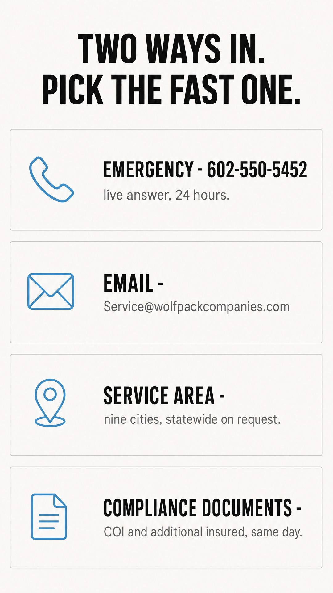
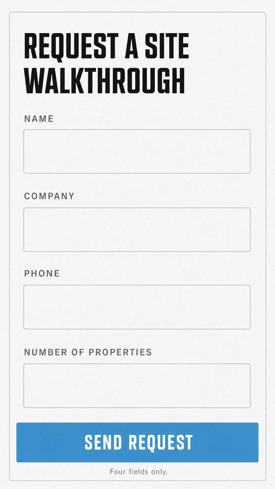
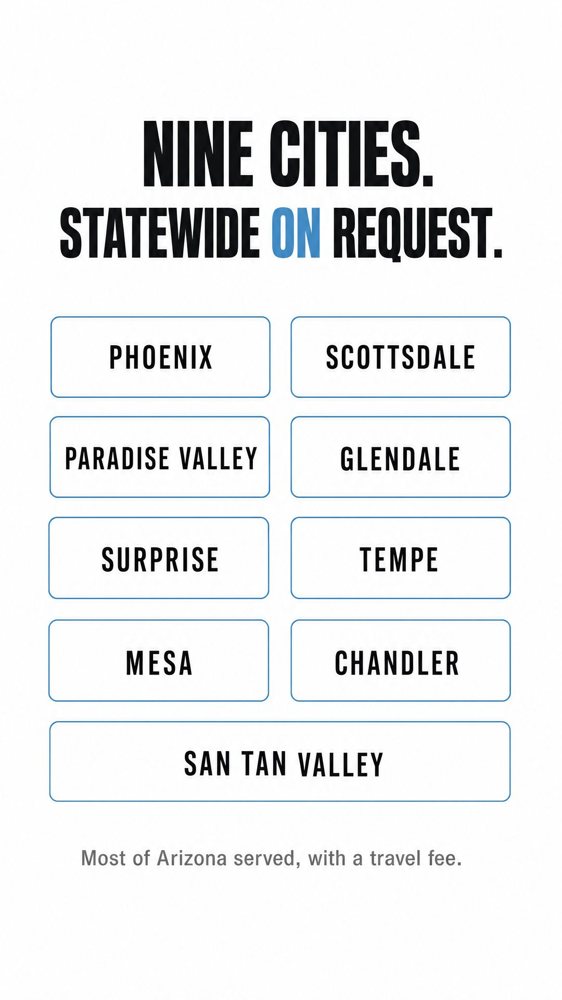

What changed. The phone number is a full-width call bar instead of being hidden. Services and audiences are full-width rows you scan, not tall centred boxes. The work photos are a swipe rail. The footer rows are tappable.
The photography is generated and the generator painted a made-up Wolfpack logo onto the truck and the crew shirts. Placeholder only. Thursday's shoot replaces every photo.


The test this page passed. Its copy was written in desktop shapes — a 2x2 grid, three figures side by side, a six-row table, four steps in a row. All four came back as proper phone patterns.
The response numbers are ours, not Wolfpack's. The 30-minute callback and 4-hour on-site figures have never been confirmed by Ross. They now read as a written service guarantee on the page whose job is surviving vendor vetting. This page cannot go live to customers until he commits to those numbers, or we replace them.



Before and after are stacked, not side by side — on a phone two half-width pipe shots are unreadable, and this is the page's whole argument.
Both pipe shots are generated. These must be Wolfpack's own sewer camera stills before this page goes anywhere near a customer. A fabricated before-and-after is the one image on this site a property manager would be right to distrust.



Aimed at the group, not the restaurant. One agreement across the estate, priced per location, records filed per address — which is the thesis in the plan, not a generic services page.



Four fields, full width, stacked. The brief says drop-off gets steep past three, so nothing was added — no message box, no fifth field.